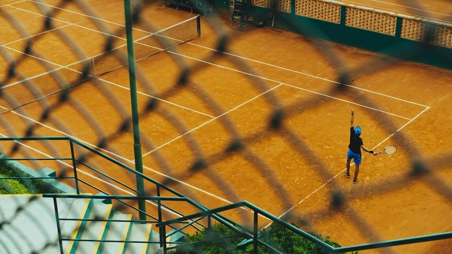

ゼレンスキー氏：ロシアが新たな大規模攻撃を準備しているZelenskyj: Ryssland förbereder nya massiva anfallロシアはウクライナ、特に発電所に対する新たな大規模攻撃の準備を進めている。
ゼレンスキー氏：ロシアが新たな大規模攻撃を準備しているZelenskyj: Ryssland förbereder nya massiva anfallロシアはウクライナ、特に発電所に対する新たな大規模攻撃の準備を進めている。 ウルフ・クリステション、新たな信頼度調査でトップUlf Kristersson störst i ny förtroendemätning穏健党の党首ウルフ・クリステションが、DN／イプソスによる最新の信頼度調査で1位となった。
ウルフ・クリステション、新たな信頼度調査でトップUlf Kristersson störst i ny förtroendemätning穏健党の党首ウルフ・クリステションが、DN／イプソスによる最新の信頼度調査で1位となった。 クラングと歓喜のパフォーマンスで、レーグレがスケレフテオを17秒で沈めたClang och jubelföreställning när Rögle sänkte Skellefteå på 17 sekunderレーグレは8連敗を喫してスケレフテオでの試合に臨んだ。しかしスコーネのチームは、スウェーデン選手権決勝の再戦を4-1で制し、再び勝利の軌道に戻った。
クラングと歓喜のパフォーマンスで、レーグレがスケレフテオを17秒で沈めたClang och jubelföreställning när Rögle sänkte Skellefteå på 17 sekunderレーグレは8連敗を喫してスケレフテオでの試合に臨んだ。しかしスコーネのチームは、スウェーデン選手権決勝の再戦を4-1で制し、再び勝利の軌道に戻った。 ストックホルムの中央党が決定を酷評 ― 賛成票を投じないC i Stockholm sågar beslutet – kommer inte rösta ja中央党のストックホルム地区は、政権問題に関する党指導部の方針に反対すると、地区会長のヨナス・ナッデボ氏が述べた。信任評議会が決定を下す。
ストックホルムの中央党が決定を酷評 ― 賛成票を投じないC i Stockholm sågar beslutet – kommer inte rösta ja中央党のストックホルム地区は、政権問題に関する党指導部の方針に反対すると、地区会長のヨナス・ナッデボ氏が述べた。信任評議会が決定を下す。 ユールゴーデンが5連敗を喫した試合で、スター選手が審判を殴打する場面Här slår stjärnan till domaren när Djurgården förlorade femte rakaユールゴーデンは5連敗――するとアウェーのベクショー戦の終盤には、かなりいら立った空気になった。ユールゴーデンのキャプテン、マルクス・クルーガーは退場処分となった――その後
ユールゴーデンが5連敗を喫した試合で、スター選手が審判を殴打する場面Här slår stjärnan till domaren när Djurgården förlorade femte rakaユールゴーデンは5連敗――するとアウェーのベクショー戦の終盤には、かなりいら立った空気になった。ユールゴーデンのキャプテン、マルクス・クルーガーは退場処分となった――その後 クリステルソン氏：政党が4年間すね続けることはないだろうKristersson: Partier kommer inte sura i fyra år穏健党党首のウルフ・クリステルソン氏は、自身が率いる可能性のある新政権が、さまざまな政党を見つけられると見込んでいる
クリステルソン氏：政党が4年間すね続けることはないだろうKristersson: Partier kommer inte sura i fyra år穏健党党首のウルフ・クリステルソン氏は、自身が率いる可能性のある新政権が、さまざまな政党を見つけられると見込んでいる ボストン・マラソンで倒れたランナーを助け、称賛されるPrisas efter att ha hjälpt löpare som kollapsade på Boston Marathonアジェイ・ハリダッセはボストン・マラソンでゴールまで300メートルのところで倒れた。そのとき2人のランナー仲間に助けられ、今、その2人は国際陸上競技連盟から称賛されている
ボストン・マラソンで倒れたランナーを助け、称賛されるPrisas efter att ha hjälpt löpare som kollapsade på Boston Marathonアジェイ・ハリダッセはボストン・マラソンでゴールまで300メートルのところで倒れた。そのとき2人のランナー仲間に助けられ、今、その2人は国際陸上競技連盟から称賛されている 中絶がより容易に：「勝利だ」Nu blir det lättare att göra abort: ”En seger”法律の変更
中絶がより容易に：「勝利だ」Nu blir det lättare att göra abort: ”En seger”法律の変更 クリステション氏（M）「非常に歓迎すべき知らせ」Kristersson (M): ”Ett mycket välkommet besked”穏健党のウルフ・クリステション党首は、中央党が同党の信任評議会に対しブルジョワ…を進めるよう勧告するとしたエリサベト・タンド・リングクヴィスト氏からの発表を歓迎している。
クリステション氏（M）「非常に歓迎すべき知らせ」Kristersson (M): ”Ett mycket välkommet besked”穏健党のウルフ・クリステション党首は、中央党が同党の信任評議会に対しブルジョワ…を進めるよう勧告するとしたエリサベト・タンド・リングクヴィスト氏からの発表を歓迎している。 喜ばしい数字：これほど多くの生徒が卒業に成功したことはかつてないGlädjesiffran: Aldrig har så många lyckats ta studenten3年以内に卒業資格を取得する生徒の割合が過去最高であることが、教育庁の新たな数字で示された。その理由は、不安定な世界情勢によってそれがより魅力的なものになったことかもしれない…
喜ばしい数字：これほど多くの生徒が卒業に成功したことはかつてないGlädjesiffran: Aldrig har så många lyckats ta studenten3年以内に卒業資格を取得する生徒の割合が過去最高であることが、教育庁の新たな数字で示された。その理由は、不安定な世界情勢によってそれがより魅力的なものになったことかもしれない… スウェーデン、欧州選手権前のリハーサルマッチでアイスランドに敗れるSverige föll i EM-genrepet mot Islandスウェーデンは欧州選手権前の最初のリハーサルマッチでアイスランドに敗れた。代表に復帰したニーナ・コッパングがスウェーデンの最優秀選手に選ばれた。― 彼女の姿を見るのは本当に素晴らしい
スウェーデン、欧州選手権前のリハーサルマッチでアイスランドに敗れるSverige föll i EM-genrepet mot Islandスウェーデンは欧州選手権前の最初のリハーサルマッチでアイスランドに敗れた。代表に復帰したニーナ・コッパングがスウェーデンの最優秀選手に選ばれた。― 彼女の姿を見るのは本当に素晴らしい 中央党女性組織の会長：「もちろん失望しています」C-kvinnornas ordförande: ”Klart att jag är besviken”本日の会合で党の国会議員団と党執行部がウルフ氏率いる中道右派の少数派政権を推奨することを決定したことを受け、複数の中央党幹部が失望している。
中央党女性組織の会長：「もちろん失望しています」C-kvinnornas ordförande: ”Klart att jag är besviken”本日の会合で党の国会議員団と党執行部がウルフ氏率いる中道右派の少数派政権を推奨することを決定したことを受け、複数の中央党幹部が失望している。 オピオイド依存症だったテレーズさん：「膨大な量を服用していました」Therese var beroende av opioider: ”Åt enorma mängder”手術後にオピオイドを処方された数千人の人々が、その後も長期間にわたって受け取り続けており、依存症や過剰摂取のリスクを高めていると、上級医師は指摘している…
オピオイド依存症だったテレーズさん：「膨大な量を服用していました」Therese var beroende av opioider: ”Åt enorma mängder”手術後にオピオイドを処方された数千人の人々が、その後も長期間にわたって受け取り続けており、依存症や過剰摂取のリスクを高めていると、上級医師は指摘している… サウジアラビアの石油精製所への致命的な攻撃Dödlig attack mot saudiskt oljeraffinaderiサウジアラビア南部の石油精製所が攻撃を受け、施設が一部閉鎖された。
サウジアラビアの石油精製所への致命的な攻撃Dödlig attack mot saudiskt oljeraffinaderiサウジアラビア南部の石油精製所が攻撃を受け、施設が一部閉鎖された。 ギッセン氏：「中央党にとって激変をもたらす決定」Gissén: ”Ett omvälvande beslut för Centerpartiet”中央党は、ウルフ・クリステション氏が率いる4党政権に参加することを望んでいるが、まず信任評議会が賛成しなければならない。「理論上は、そこで決定を変更することもできるが、その後はわずかな
ギッセン氏：「中央党にとって激変をもたらす決定」Gissén: ”Ett omvälvande beslut för Centerpartiet”中央党は、ウルフ・クリステション氏が率いる4党政権に参加することを望んでいるが、まず信任評議会が賛成しなければならない。「理論上は、そこで決定を変更することもできるが、その後はわずかな 政治学者：中央党は、いずれにしても裏切り論争に直面するリスクがあるStatsvetaren: C riskerar svekdebatt oavsett首相としてのクリステルソン氏に賛成票を投じたいという党指導部からの発表は、…することになるだろう
政治学者：中央党は、いずれにしても裏切り論争に直面するリスクがあるStatsvetaren: C riskerar svekdebatt oavsett首相としてのクリステルソン氏に賛成票を投じたいという党指導部からの発表は、…することになるだろう ロシアの攻撃の波が迫る：「終わったときに目覚めたい」Rysk attackvåg hotar: ”Vill vakna när det är över”ウクライナは、空軍基地や石油施設など、ロシア国内で新たな攻撃を実施したとしている。ゼレンスキー氏は、…に対するロシアの新たな攻撃の波について警告している。
ロシアの攻撃の波が迫る：「終わったときに目覚めたい」Rysk attackvåg hotar: ”Vill vakna när det är över”ウクライナは、空軍基地や石油施設など、ロシア国内で新たな攻撃を実施したとしている。ゼレンスキー氏は、…に対するロシアの新たな攻撃の波について警告している。 嵐警報が米国の感謝祭の祝いを妨げるStormvarning stör USA:s Thanksgiving-firande米国全土の冬の嵐により、数千人の旅行者が、同国で最も…の一つである期間中に足止めされる恐れがある
嵐警報が米国の感謝祭の祝いを妨げるStormvarning stör USA:s Thanksgiving-firande米国全土の冬の嵐により、数千人の旅行者が、同国で最も…の一つである期間中に足止めされる恐れがある オールソン氏（中央党）：左翼党が引き下がるのに遅すぎることはないOhlsson (C): Inte för sent för V att backa国会議員のビルギッタ・オールソン氏（中央党）によれば、赤緑連立政権の実現にまだ遅すぎることはない。
オールソン氏（中央党）：左翼党が引き下がるのに遅すぎることはないOhlsson (C): Inte för sent för V att backa国会議員のビルギッタ・オールソン氏（中央党）によれば、赤緑連立政権の実現にまだ遅すぎることはない。 C内の分裂：「これを乗り越えていく」Splittringen i C: ”Kommer ta oss igenom det här”内部の反応
C内の分裂：「これを乗り越えていく」Splittringen i C: ”Kommer ta oss igenom det här”内部の反応 外務省、ロシア大使を呼び出しUD kallade upp Rysslands ambassadörスウェーデン外務省は木曜日、ストックホルム駐在のロシア大使を呼び出した。
外務省、ロシア大使を呼び出しUD kallade upp Rysslands ambassadörスウェーデン外務省は木曜日、ストックホルム駐在のロシア大使を呼び出した。 フルテンバック氏：「どうやって行うのかには答えなかった」Furtenbach: ”Svarade inte på hur det ska gå till”中央党のエリサベト・タンド・リングクビスト党首は記者会見で、同党の国会議員団と党執行部がウルフ・クリステルソン氏（穏健党）を首…として容認したい意向だと発表した
フルテンバック氏：「どうやって行うのかには答えなかった」Furtenbach: ”Svarade inte på hur det ska gå till”中央党のエリサベト・タンド・リングクビスト党首は記者会見で、同党の国会議員団と党執行部がウルフ・クリステルソン氏（穏健党）を首…として容認したい意向だと発表した 中央党の発表に党首らはこう反応：「私たちの扉は引き続き開かれている」Så reagerar partiledarna på C:s besked: ”Vår dörr står fortsatt öppen”発表への反応
中央党の発表に党首らはこう反応：「私たちの扉は引き続き開かれている」Så reagerar partiledarna på C:s besked: ”Vår dörr står fortsatt öppen”発表への反応 開幕戦でノルウェー勢が相次いで嘔吐：「あまり気持ちよさそうには見えない」Norsk spykavalkad i premiären: ”Det ser inte så skönt ut”ノルウェーのスター選手たちがフィンランドを黄色く染めている。開幕戦でフィニッシュしたノルウェー選手たちは次々と嘔吐した。「あまり気持ちよさそうには見えない」とヴェトレ・ショースタッド・クリスティアは言う
開幕戦でノルウェー勢が相次いで嘔吐：「あまり気持ちよさそうには見えない」Norsk spykavalkad i premiären: ”Det ser inte så skönt ut”ノルウェーのスター選手たちがフィンランドを黄色く染めている。開幕戦でフィニッシュしたノルウェー選手たちは次々と嘔吐した。「あまり気持ちよさそうには見えない」とヴェトレ・ショースタッド・クリスティアは言う
ミャルビー、欧州で初黒星 ― カイラト・アルマトイに敗れるFörsta förlusten för Mjällby i Europa – föll mot Kairat Almatyミャルビーは欧州で無敗だった。これまでは。ミャルビーがカザフスタンのカイラト・アルマトイに敗れた試合では、ホーム側のゴールキーパーが大活躍した。 エングラ・ニルソン、シーズンを欠場へ――手術を余儀なくされるEngla Nilsson ställer in säsongen – tvingas till operationエングラ・ニルソンは手術を余儀なくされた。けがにより室内シーズン全体を欠場することになる。「最終的に手術が唯一の選択肢になった」と、彼女はインスタグラムに書いた
エングラ・ニルソン、シーズンを欠場へ――手術を余儀なくされるEngla Nilsson ställer in säsongen – tvingas till operationエングラ・ニルソンは手術を余儀なくされた。けがにより室内シーズン全体を欠場することになる。「最終的に手術が唯一の選択肢になった」と、彼女はインスタグラムに書いた ダイアナ妃の慈善基金が危機にPrinsessan Dianas välgörenhetsfond i krisダイアナ妃を記念して英国に設立された慈善団体が発表…
ダイアナ妃の慈善基金が危機にPrinsessan Dianas välgörenhetsfond i krisダイアナ妃を記念して英国に設立された慈善団体が発表… エドヴィン・アンゲル、ルカでのスプリントを欠場：「100％の状態ではない」Edvin Anger står över sprinten i Ruka: ”Inte i hundra form”エドヴィン・アンゲルは、先週末のスウェーデン開幕戦が非常に厳しい結果となったことを受け、ルカでのワールドカップ開幕戦の土曜日のスプリントを欠場することにした。大会を前に、彼は複数のことについて語る
エドヴィン・アンゲル、ルカでのスプリントを欠場：「100％の状態ではない」Edvin Anger står över sprinten i Ruka: ”Inte i hundra form”エドヴィン・アンゲルは、先週末のスウェーデン開幕戦が非常に厳しい結果となったことを受け、ルカでのワールドカップ開幕戦の土曜日のスプリントを欠場することにした。大会を前に、彼は複数のことについて語る リサ・エリクソン、出場停止後の教訓について語る「今は賢くなった」Lisa Eriksson om lärdomarna efter avstängningen: ”Smartare nu”リサ・エリクソンは、ジュニアからシニアへ移行しようとしていた際に、過負荷のため代表チームによって競技から外された。23歳の彼女は今、定着を図ろうとしている
リサ・エリクソン、出場停止後の教訓について語る「今は賢くなった」Lisa Eriksson om lärdomarna efter avstängningen: ”Smartare nu”リサ・エリクソンは、ジュニアからシニアへ移行しようとしていた際に、過負荷のため代表チームによって競技から外された。23歳の彼女は今、定着を図ろうとしている タンド・リングクヴィスト氏：SDとの組織的な協力はないThand Ringqvist: Inget organiserat samarbete med SD中央党の党執行部は、月曜日にウルフ・クリステション政権を承認するよう同党の信任評議会に勧告している。その際、同党自らも4党連立政権に参加したい考えだ
タンド・リングクヴィスト氏：SDとの組織的な協力はないThand Ringqvist: Inget organiserat samarbete med SD中央党の党執行部は、月曜日にウルフ・クリステション政権を承認するよう同党の信任評議会に勧告している。その際、同党自らも4党連立政権に参加したい考えだ チャット：この発表についてどう思いますか？CHATT: Vad tycker du om beskedet?中央党の発表：賛成票を投じたい意向
チャット：この発表についてどう思いますか？CHATT: Vad tycker du om beskedet?中央党の発表：賛成票を投じたい意向 アンデション氏：歴史的に弱い政権になるだろうAndersson: Skulle vara en historiskt svag regeringウルフ・クリステション氏（M）が率いる政権は「歴史的に弱く、…する機会を欠く」ものになるだろう…
アンデション氏：歴史的に弱い政権になるだろうAndersson: Skulle vara en historiskt svag regeringウルフ・クリステション氏（M）が率いる政権は「歴史的に弱く、…する機会を欠く」ものになるだろう… タンド・リングクビスト氏、中央党がクリステルション氏に賛成票を投じることを望むThand Ringqvist vill att Centerpartiet röstar ja till Kristersson長時間の会議が続いた一日の後、中央党のエリサベト・タンド・リングクビスト党首は記者会見を開き、党執行部の決定を発表した。「私たちは…を推薦します
タンド・リングクビスト氏、中央党がクリステルション氏に賛成票を投じることを望むThand Ringqvist vill att Centerpartiet röstar ja till Kristersson長時間の会議が続いた一日の後、中央党のエリサベト・タンド・リングクビスト党首は記者会見を開き、党執行部の決定を発表した。「私たちは…を推薦します グレアム・クラークはすべての交代で同じことをする：「多すぎるかもしれない…」Graeme Clarke gör samma sak – i varje byte: ”Kanske för mycket...”グレアム・クラークはフレールンダの攻撃面での得点を牽引し、チーム内の得点王となっている。その成功の背景にあるかもしれない一つの細部がこれだ。―彼はパックで何かをしたがっている…
グレアム・クラークはすべての交代で同じことをする：「多すぎるかもしれない…」Graeme Clarke gör samma sak – i varje byte: ”Kanske för mycket...”グレアム・クラークはフレールンダの攻撃面での得点を牽引し、チーム内の得点王となっている。その成功の背景にあるかもしれない一つの細部がこれだ。―彼はパックで何かをしたがっている… イタリア：クウェートでのドローン攻撃で市民2人が死亡Italien: Två medborgare döda i drönarangrepp i Kuwaitイタリア人市民2人がクウェートに対するイランのドローン攻撃で死亡したと、イタリアの…が述べた
イタリア：クウェートでのドローン攻撃で市民2人が死亡Italien: Två medborgare döda i drönarangrepp i Kuwaitイタリア人市民2人がクウェートに対するイランのドローン攻撃で死亡したと、イタリアの…が述べた トランプ氏：プーチン氏は欧州への脅しを撤回すべきだTrump: Putin borde dra tillbaka hoten mot Europaウラジーミル・プーチン氏は、欧州の領土に対するあらゆる軍事的侵略を撤回すべきだ。
トランプ氏：プーチン氏は欧州への脅しを撤回すべきだTrump: Putin borde dra tillbaka hoten mot Europaウラジーミル・プーチン氏は、欧州の領土に対するあらゆる軍事的侵略を撤回すべきだ。 専門家：警察はIP-TV利用者をこうして取り締まることができるExpert: Så kan polisen slå mot ip-tv-användare欧州各地でユーロポールによる大規模な摘発
専門家：警察はIP-TV利用者をこうして取り締まることができるExpert: Så kan polisen slå mot ip-tv-användare欧州各地でユーロポールによる大規模な摘発 ギッセン：中央党（C）内の多数派はクリステルソン路線を支持Gissén: Majoriteten inom C är för Kristersson-spåret本日木曜日、中央党は党理事会と国会議員団が参加して会合を開き、政権形成に関して党が直面する運命的な選択について決定する。「それは
ギッセン：中央党（C）内の多数派はクリステルソン路線を支持Gissén: Majoriteten inom C är för Kristersson-spåret本日木曜日、中央党は党理事会と国会議員団が参加して会合を開き、政権形成に関して党が直面する運命的な選択について決定する。「それは 中央党党首、運命の会合後に記者会見を招集C-ledaren kallar till pressträff efter ödesmötet中央党党首エリサベト・タンド・リングクビスト氏は木曜日、国会で記者会見を開く予定だ…
中央党党首、運命の会合後に記者会見を招集C-ledaren kallar till pressträff efter ödesmötet中央党党首エリサベト・タンド・リングクビスト氏は木曜日、国会で記者会見を開く予定だ… ジョージア、主要野党の禁止へ進むGeorgien på väg att förbjuda de stora oppositionspartiernaジョージア政府は国内最大の野党を禁止したい考えで、憲法裁判所は現在その作業を開始した。「この時期は最も危険な時期の一つだ← トップページへ戻る
ジョージア、主要野党の禁止へ進むGeorgien på väg att förbjuda de stora oppositionspartiernaジョージア政府は国内最大の野党を禁止したい考えで、憲法裁判所は現在その作業を開始した。「この時期は最も危険な時期の一つだ← トップページへ戻る